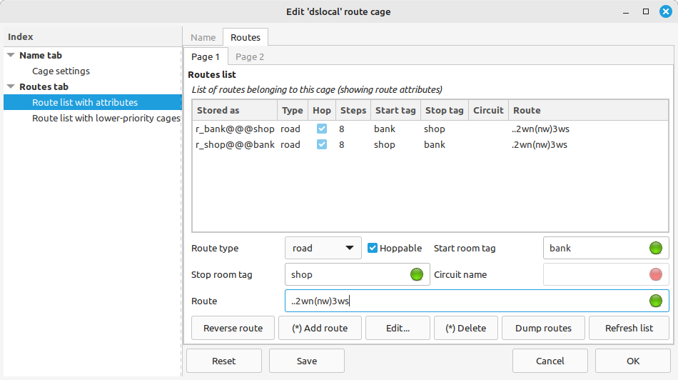

Players often use aliases to move between two rooms. For example, to move between a shop and a bank, a player might create two aliases called
shop2bank
bank2shop
Creating aliases is one way to do it - but there's a better way!
Routes are a fixed path between two rooms. To create an alias, you could type
;addalias shop2bank w;w;n;nw;w;w;w;s
;addalias bank2shop n;e;e;e;se;s;e;e
To create a route, you should type
;addroute shop bank w;w;n;nw;w;w;w;s
;addroute bank shop n;e;e;e;se;s;e;e
Of course, for very long routes you might prefer to use speedwalk commands (in the Guide, see Section 4.4.5)
;addalias shop2bank .2wn(nw)3ws
;addroute shop bank .2wn(nw)3ws
Speedwalk commands are really useful because you can reverse the path just by adding a full stop/period at the beginning.
;addroute shop bank ..2wn(nw)3ws
If you prefer clicking over typing, then you can add routes using an edit window:
Creating the reverse route is just as simple:

To move between the shop and the bank, you can now type
;drive shop bank
To move in the opposite direction, you can now type
;drive bank shop
Actually, there are three types of route. The ones you just created are called road routes. A road route represents a path between two rooms that uses main roads, marked paths, and so on.
The opposite of a road route is a quick route, which represents a shorter path between two rooms. The path is shorter because you don't stick to using main roads and marked paths.
To add a quick route from the edit window, find the Routes type box and select quick; then repeat the process above.
You can create both a road route and a short route between the same two rooms. If so, take the road route by typing
;road bank shop
Take the quick route by typing
;quick bank shop
The ;drive command tells Axmud to use a road route, if it exists, and otherwise to use a quick route.
The third type of route is called a circuit route.
Circuit routes begin and end in the same room. If you're hunting an NPC which spawns at a random location in a zone, you could create a circuit around the zone, and then type
;circuit myroute
If it's a long route, you could create a temporary trigger so you don't miss the NPC when you pass him. For example, to look out for trolls:
;sound on
;addtrigger -s troll -p ;beep -t 1
(Of course, it's a lot easier to create triggers from the edit window; in the Guide, see Section 7.1.)
Now we get to the really clever part.
SHOP === BANK === GUILD ROOM
Let's assume that you've created a route between the shop and the bank, and that you've created another route between the bank and the guild room.
If you want to travel directly between the shop and the guild room, there is no need to create a third route; you can just type
;drive shop guildroom
...which is the same as typing
;drive shop bank
;drive bank guildroom
Axmud automatically combines routes to find the shortest path, even if that means checking dozens or hundreds of different routes.
Sometimes a route might be blocked by a natural hazard or an NPC. In either case, you won't want Axmud to combine this route with other routes.
Routes are hoppable by default, which means that Axmud can hop between routes to reach its desination. If you don't want a route to be hoppable, just deselect the check button in the edit window.
Another useful feature is that you only need to type the start room once. In other words, if you
;drive shop bank
...then you don't need to type
;drive bank guildroom
...because Axmud already knows that you're at the bank; instead, you can just type
;drive guildroom
You can use the automapper to add room tags to a room (right click the room, then click Set room text > Set room tag... )
If the automapper knows you're at a room tagged as BANK, then you don't need to type the start room; just tell Axmud where you want to go.
;drive guildroom
Routes are completely independent of the automapper. Of course, if you have drawn a nice map, then you don't need to use routes at all; just tell Axmud to
;go guildroom